Bancada T2 e os ícones dos itens novos
- Bancada menor: de 40×64 pra 32×40, o mesmo quadro do baú. O corpo ocupa uns 28×24 px, quase a pegada do baú (31×23), e ela continua lendo como máquina: sapata B, colunas bege com a faixa laranja e o friso dourado, corpo de cobre, visor e boca com bandeja.
- Braço robótico na quina da frente-esquerda do tampo, de perfil: base giratória (escura com anel laranja), braço, cotovelo, antebraço, punho e garra de 2 dedos. É bege com juntas escuras pra destacar do cobre. O antebraço baixa e o laser sai da garra e desce pro visor.
- Animação mais lenta: 8 quadros a 4 fps (ciclo de 2 s). Escolhi mais quadros em vez de só baixar o fps: com 4 quadros a 3 fps o braço "pula"; com 8 ele desce, trabalha (laser fino → cheio → pulsa) e volta suave.
- Lingote de ferro refeito pela referência do dono: barra de aço cinza claro, bloco retangular em 3/4 com o tampo grande e chanfrado, brilho no tampo, a frente média com um reflexo e o lado na sombra. Nada de cobre.
- Decisões do dono registradas: o diagrama substitui o projeto (
bp_<id>) e o ícone novo fica no lugar doicon_blueprint; oicon_workbenchfica (redesenhado pra bancada nova); os ids propostos estão ok:workbench,iron_ingot,water_capsule,silicon_wafer,circuit,chip,wireediagram. - Os outros ícones (cápsula, wafer, circuito, chip, fios e diagrama) foram aprovados e não mudaram.
v2 · Bancada ao lado da v1, do baú e da cápsula
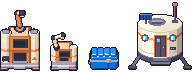
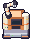
machine_workbench.png · 6×
v2 · Os 8 quadros

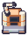
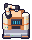
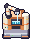
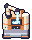
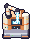
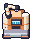
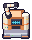
v2 · Lingote de ferro: referência × v1 × v2
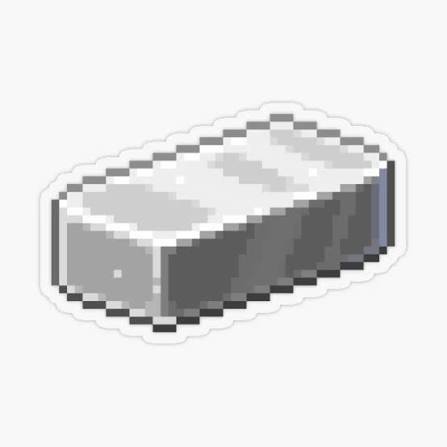
O que veio da referência: o bloco retangular deitado em 3/4, o tampo grande e claro com a faixa de brilho,
a quina chanfrada clara entre o tampo e a frente, a frente cinza média com um pontinho de reflexo e a lateral
escura. No nosso estilo: 16×16, contorno #1b1630, só cores chapadas (6 cinzas frios, do
#ffffff ao #555b6a), sem alfa parcial. Diferencia-se do minério de ferro (pepitas cobre) e
do tampo prateado do chip pelo formato de barra.
v2 · No chão do jogo
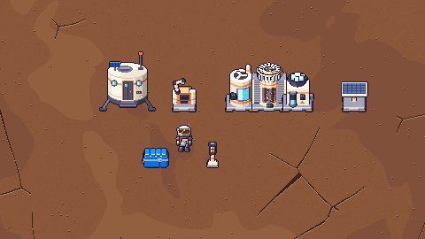
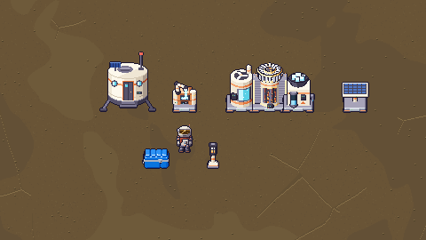
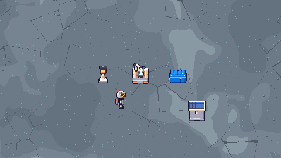
Recortes 480×270 (metade da tela) ampliados 2×, montados só com os sprites, ordenados pelo pé como o jogo desenha.
Ícones dos itens
Lingote de ferro
icon_iron_ingot.png · 16×16barra em tronco de pirâmide na cor do ferro do jogo
Cápsula de água
icon_water_capsule.png · 16×16cilindro de vidro com tampas de metal, água azul até 2/3
Wafer de silício
icon_silicon_wafer.png · 16×16disco espelhado com grade de dies, chanfro reto e reflexo iridescente
Circuito elétrico
icon_circuit.png · 16×16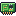
placa verde deitada, trilhas, CI, resistor e os dentes dourados
Chip de computador
icon_chip.png · 16×16CPU quadrada escura, pernas douradas nos 4 lados, tampa prateada
Fios
icon_wire.png · 16×16carretel com voltas de fio de cobre e a ponta solta
Diagrama
icon_diagram.png · 16×16cartão de planta azul deitado, desenho técnico, clipe laranja
Bancada T2 (item)
icon_workbench.png · 16×16redesenhado na v2 pra acompanhar a bancada nova (baixa, braço de perfil na quina)
Na hotbar, em tamanho real
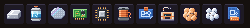
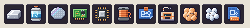
Projeto (sai) × Diagrama (entra)
icon_blueprint.png (projeto, bp_<id>)icon_diagram.png (diagrama)Decisão do dono: o diagrama substitui o projeto. Mesma família (azul de planta, grade, traço claro, laranja de acento), agora um cartão deitado com clipe.
Pro Dev integrar
- Nada disso entra sem o ok do dono. Ids aprovados:
workbench,iron_ingot,water_capsule,silicon_wafer,circuit,chip,wire,diagram. - Bancada:
machine_workbench.png32×40 (v2; a v1 era 40×64), âncora do baú: pé no centro da borda de baixo do tile, 1 tile, cabe no tile (não passa pros lados). Sem sombra no sprite. - Animação:
anim/anim_machine_workbench.png256×40, 8 quadros de 32×40 na horizontal, 4 fps sugerido (ciclo de 2 s). Atenção: oanim_framesde hoje usaANIM_FRAMES = 4fixo; essa tira precisa do nº de quadros tirado da largura (largura ÷ largura do parado) ou de um caso só pra ela. Quadro 0 = o repouso (pixel a pixel igual ao parado). Sugestão: anima só enquanto fabrica e sem fase por tile. - Pontos no quadro (32×40): ponta da garra trabalhando (quadros 3–5) em (17, 13); miolo do visor em (16, 22); boca de (12, 26) a (20, 30).
- Ícones 16×16, contorno
#1b1630, alpha 0/255:icon_iron_ingot(v2),icon_water_capsule,icon_silicon_wafer,icon_circuit,icon_chip,icon_wire,icon_diagram(no lugar doicon_blueprintnos itensbp_<id>/ aviso de projeto) eicon_workbench(v2). - Regerar:
python3 tools/sprites/v05_bancada_itens.py(determinístico; refaz este report). A v1 fica congelada emv1/.
v1 · histórico
- Bancada 40×64 (tamanho do nv.2), garra no meio do tampo, 4 quadros a 6 fps.
- Lingote em trapézio cor de cobre. O resto dos ícones é o mesmo da v2.
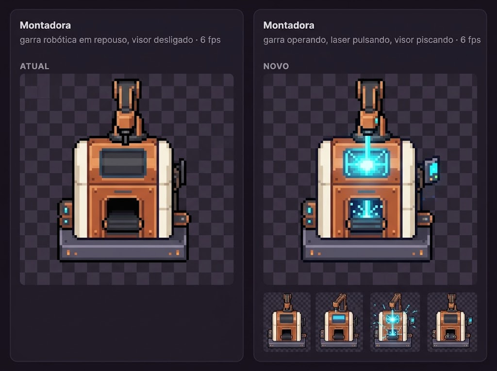

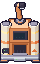
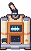
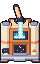
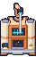
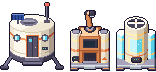
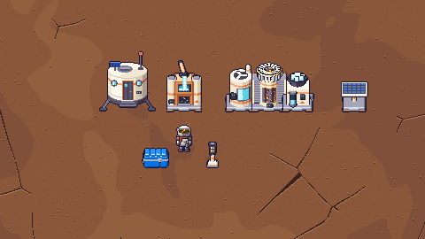
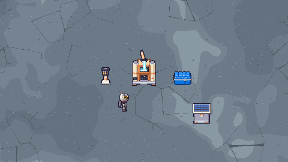
O que veio do conceito (vale pras duas versões): corpo de cobre entre laterais creme, base escura larga, garra robótica, visor na frente, boca com bandeja, laser azul da garra pro visor, visor piscando em ciano, faíscas. Traduzido pro nosso pixel art: colunas bege com faixa laranja e friso dourado (família do fabricador e das nv.2), sapata B padrão, cobre em 5 faixas de luz, laser em pixel chapado (núcleo branco, borda ciano), sem glow nem gradiente.